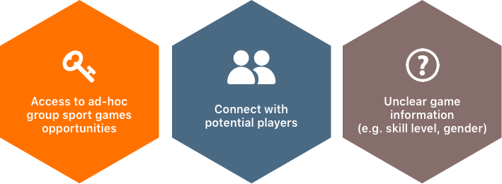

BuddyUp
A sport matching mobile app to bring sport-loving busy individuals back to the field
Interaction Design

Project Type
Interaction Design
Individual Project
Fall 2017 (3 months)
Role
Interaction Designer
Skills
Wireframing, Storyboard
Prototyping, Personas
Sketching, Competitive Analysis
The Challenge
BRIDGE THE GAP
People enjoy not only the physical exercise but also the social contact between people from group sports, however, gathering enough people for a good match is difficult even with existing social media services.
Design Process
ITERATE FOR REAL NEEDS

Research
NEEDFINDING TO FRAME THE PROBLEM
INTERVIEW
I conducted several rounds of Interviews with amateur sport players to identify their pain points. It turned out that their frustrations stemmed from scheduling conflicts, unclear information of games held by strangers and lack of motivation to exercise alone.
“I can’t go jogging for 2 hours in a row because i get bored, but for group sports like badminton, it’s fun and I can play for 2 hours.”
“There are regular games on Wednesdays, but I cannot make it.”
“I felt guilty joining the game [for dragging my team].”
COMPETITIVE ANALYSIS
I analyzed existing matching services, including Meetup, Facebook groups and Bvddy, to explore the current solution space users can utilized. Even though each of the service caters to different user group and has its own merits, I discovered the three main gaps that led to users’ frustrations.
Ideation
BRAINSTORM & STORYBOARD
Based on the findings, I brainstormed for several ways to tackle the users’ needs, and then expanded the sketches into scenarios that captured users’ pain points, emotion and interactions with the solution.

PERSONAS
I created multiple pro-personas and an anti-persona based on the initial research and testings. The personas represent users’ goals and pain points that helped me to prioritize different user needs to guide the converging phase of my design process.
NARROW DOWN THE FOCUS
Synthesizing the findings and concepts from the ideation phase, I decided the overarching design rationale to guide the following design process.
ITERATION AND REFINEMENT
WIREFRAMES & DESIGN RATIONALE
Based on the design philosophy, I developed multiple wireframes with different task flows. I then evaluated and landed on the final flow by conducting Questions-Options-Criteria analysis and collecting user feedback.


PROTOTYPES
Before crafting the high-fidelity prototype, I used paper prototype to evaluate the flow and interactions. By testing with target users, I improved usability, such as making the screen less cluttering, and tested on the fly new features inspired during interviews that enhance experiences.
I then created hi-fi digital prototype with Sketch and InVision to yield more realistic experience. From high-level features to granular design elements, I tested and refined the design iteratively to achieve a final design that is easy-to-use and caters to the needs of the target users.
FINAL DESIGN
DESIGN FEATURES

LIVE PROTOTYPE
IMPACT
I hope BuddyUp to bridge the information gap of existing matching services, and provides a convenient tool for busy individuals to get connected without having to compromise their quality of life for their busy schedule.
TAKEAWAY
I AM MY OWN USER, BUT I AM NOT LIKE MY USERS
My design problem stemmed from my personal experience and frustration. With users participating along my design process, I have gained more comprehensive understanding of different factors surrounding the problem to reduce my design bias. I hope to translate the understanding to design solutions that can empower people who face the same challenges.